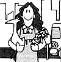

MOTHER feels strongly that youths can be creative "doers", working toward more ecological and self-reliant lifestyles .. . whether their tasks be raising chickens on a farm or maintaining rooftop container gardens in the city. To support the endeavors of our often overlooked "underage" citizens, we're glad to publish well-written articles from younger children and teenagers concerning projects they've undertaken. However, we recommend that all young authors query (that is, send us a letter telling about the story you'd like to do) before writing a full article. Address inquiries to Mother's Children, THE Mother Earth News (restricted) , P.O. Box 70, Hendersonville. North Carolina 28791.
Everyone knows that growing your own vegetables is a great way to produce nutritious and yummy food . . . but have you ever thought about seeing whether your pickings can hold their own at a judge's table?
That's right, exhibiting produce at fairs and garden clubs is fun, and an easy way to show off homegrown vegetables. And one of the best ways to learn how to do it is to join 4-H.
You may not know that 4-H clubs involve youngsters and parents working and learning together . . . receiving guidance from local county extension agents. When I started going to 4-H, I was amazed by the amount of material given to me, and by the number of different subjects I could learn about. Why, beef raising, geology, lawn and landscape, home environment, horses, aerospace, and-of course-gardening (indoor, outdoor, flower, and vegetable) are just a few of the choices!
And that's not all. My own local group, the Afton Arrows, enters county skit competitions and takes part in demonstration days and "Community Pride" roadside cleanups. Some of my friends' 4-H clubs have entered one-act play contests, and even participate in competitions to see who can conduct the best business meeting! (Most 4-H clubs hold regular meetings. They're conducted according to the rules of parliamentary procedure, and the kids are the officers.)
However, the main reason I got involved in 4-H was that I wanted to find out how to raise and show chickens and vegetables. And here's what I've learned about showing vegetables.
First of all, I make my garden plan in mid-February, or earlier, to insure that I have an idea of what the garden will look like and so I can order the vegetable varieties I want to plant. Part of my planning includes making certain my tall sun-loving vegetables (like tomatoes) don't shade the short sun-loving plants (like onions and eggplant). I also have to time my sowings so that my harvest comes in right at fair time.
The exact exhibiting requirements may be different where you live than they are in my home state of Minnesota, so before you plan your own garden, obtain last year's premium vegetable list from your county extension agent. Meanwhile, I'll tell you what I do, just to show you the kinds of things you might need to consider.
The size requirements for 4-H exhibits in Minnesota are 12 small specimens (like beans, peas, and limas) . . . three medium-sized ones (like beets, carrots, and tomatoes) . . . and one very large vegetable (like cabbage or eggplant). A good display will include a variety of sizes, colors, and kinds of crops. An assembly of-for instance-12 green beans, three tomatoes, one cabbage, three cucumbers, three onions, and three beets or carrots would be excellent.
Keep in mind that you'll probably have to sort through about 150 beans to get 12 that are free of blemishes and look almost exactly the same . . . so you'll need to grow more than you'll show of every vegetable. A good exhibition garden might include three tomato and three cucumber plants . . . 24 to 32 row-feet each of beets and carrots . . . four to six heads of cabbage . . . 12 to 15 row-feet of green beans . . . and two eggplants and 30 onions for "alternates".
After you've planted, weeded, and managed your garden, fair time will (finally!) roll around. The way you prepare and display your vegetables will be crucial to your exhibit's success. Pick the entry choices the night before you go to the fair, wrap them gently and carefully in toweling and plastic, and let them "cure" in the refrigerator overnight. (This will prevent wilting and improve crispness.)
Many little tricks can magically transform a passable exhibit into a blue ribbon display. For example, since beans should all be curved the same way (as well as being identical in size, free from blemishes, and lying with their stems facing the same direction), I often bend and twist my selections into shape. I may even flatten out a curvy one by placing a book on top of it when I put it in the refrigerator overnight to cure. (I always chuckle to myself as I do the "alterations", thinking, "If only the judge could see me now!" But these little cosmetic aids are completely legal.)
Be sure you don't leave anything to chance! One year I set my perfectly groomed and manicured cabbage on the back stoop while I washed my carrots. When I looked up, there was Angus-our Irish terrier-trotting into the woods with his mouth full of cabbage. And it was by far my best vegetable!
Don't forget to read the rules for entering . . . very carefully! At our fair, even an extra green bean or a washed onion (tut, tut!) can mean the difference between a purple grand champion exhibit and a "white flag" disqualification!
When the big contest day arrives, transport your "babies" to the fair with care. (If necessary, store them in a cooler.) Then judiciously arrange them with their best sides up. Check one more time to see that they're blemish-free and trimmed according to the rules (tomato stems off, cuke and bean stems on in Minnesota). A clean fruit box or cookie sheet lined with a new white towel will make a good display case.
Growing vegetables for county fairs can be a whole lot of fun. So this year, add another dimension to your gardening summer, and exhibit your yummies. I hope you get a purple ribbon for a grand champion exhibit . . . like I did!
EDITOR'S NOTE: The attractive vegetable row markers shown in one of the photos accompanying this article were made by Melissa's sister Julie. Regular readers will remember that the painted wooden labels were featured in MOTHER NO. 69. Information on ordering back issues can be found on page 68.
|
|
 |
|